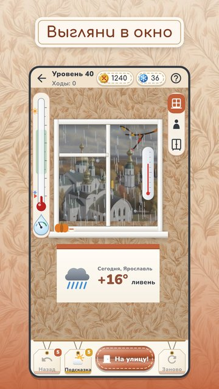

По погоде
Выгляни в окно: морось, метель или жара? Одень героя по погоде и отправь гулять.
Каждый уровень — маленькая погодная загадка. Термометр и капля показывают, хватает ли тепла и защиты от воды, а зонт, шарф или панама решают исход. Не угадал — герой вернётся замёрзшим, промокшим или распаренным, и можно переодеться.

- 200 уровней: 4 сезона и 20 городов, от −40 до +38, ливень, метель, туман, гололёд и гроза.
- 76 вещей в 15 слоях: от термобелья и валенок до сандалий и крема от солнца.
- Свой герой, Аня или Миша, и 9 соседей разных возрастов.
- «Мой гардероб»: 329 расцветок и узоров, сезонная коллекция и уютная прихожая.
- Головоломка дня, задания, достижения и праздники.
- Подсказка и отмена хода, если не получается.
- Без интернета, на русском и английском.